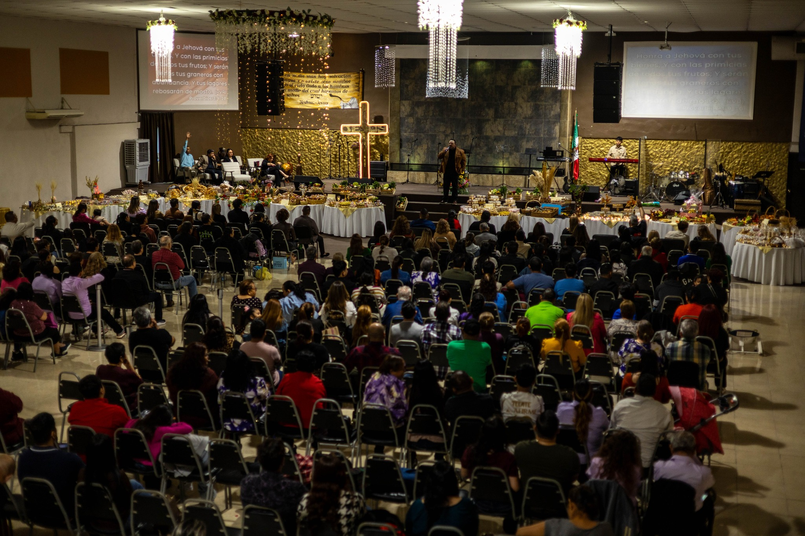

Bienvenidos a Lluvia Tardía

Visión
La visión de Ministerios Internacionales Lluvia Tardía México está fundada en:
Y conoceremos, y proseguiremos en conocer a Jehová; como el alba está dispuesta su salida, y vendrá a nosotros como la lluvia, como la lluvia tardía y temprana a la tierra. Oseas 6:3 (RVR 1960).
Misión
Ministerios Internacionales Lluvia Tardía México ofrece un nuevo comienzo y un cambio de vida por medio del conocimiento de Dios a través del Espíritu Santo y su palabra, a todos aquellos que se comprometen seriamente a ver vidas, familias, pueblos, ciudades, naciones totalmente cambiadas, hechas libres por el poder de Dios. Al estar dispuestos asumir y cumplir cada quien con su llamado, seremos parte de un poderoso ejército que se levanta; con una voz profética proclamando alrededor de esta nación y de las naciones de la tierra que: " El Reino de los Cielos se ha acercado”. Cuando esta voz profética comience a ser proclamada, acompañada de la unción poderosa del Espíritu Santo, millares serán liberados.
Estos millares van a ser aquellos que serán alcanzados, para ser consolidados y enviados. A través de la iglesia central e hijas se dará a luz diferentes ministerios, y a su vez se recibirán a otros ministerios que son llamados por El Espíritu Santo para ser parte de esta encomienda quiénes son y serán considerados hijos espirituales. Estos hijos se levantaran bajo la unción que ha sido derramada sobre ellos para ir a diferentes, tribus, pueblos y naciones. Al ser enviados estos hijos, muchas nuevas iglesias nacerán alrededor del mundo. Cuando la poderosa voz profética deje fluir la unción del Espíritu Santo, nuestra nación y las naciones de la tierra serán libertadas del pecado, de la depresión, de la obscuridad, de las tinieblas, las drogas, el divorcio, la homosexualidad, el aborto, la ira, y de todo aquello que se oponga a la Santa Palabra de Dios y afecte la vida del ser humano.
De esta manera, trabajaremos unidos en una visión de alcance y consolidación de discípulos que través del entrenamiento de hombres y mujeres ellos serán los que con valor y poder anuncien el Evangelio del Reino de los Cielos al ser enviados. Así mismo nacerá a su vez, un ministerio de comunicaciones (radio y televisión) que ofrecerá nuevos comienzos y cambio de vida, a través de una voz profética que declara "Arrepentíos, porque el Reino de los Cielos se ha acercado”. Al ser parte de esta visión nos comprometemos para que se lleve a cabo, y millones de personas puedan pararse firmes en la fe, justificados a través de la sangre de Jesucristo, por el hecho de que un grupo de individuos tomaron el reto de cumplir con su destino profético de parte de Dios.
Hasta que Cristo venga, Ministerios Internacionales Lluvia Tardía México, seguirá proclamando:
"El Evangelio del Reino de Dios”.